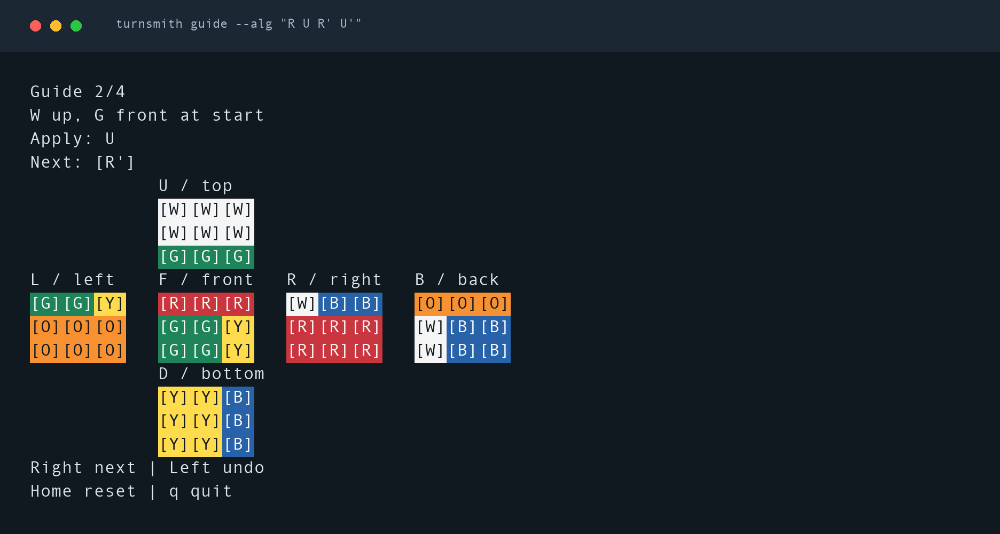
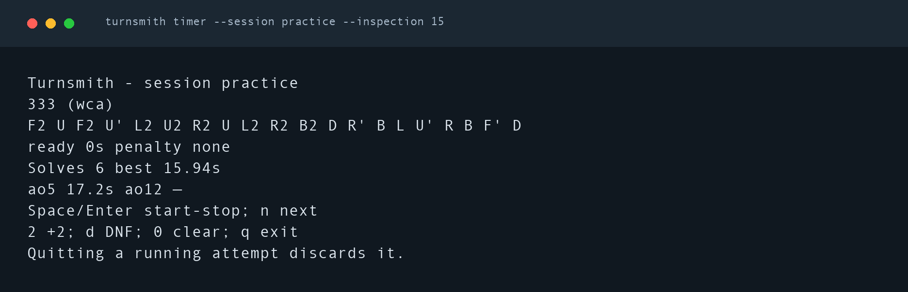
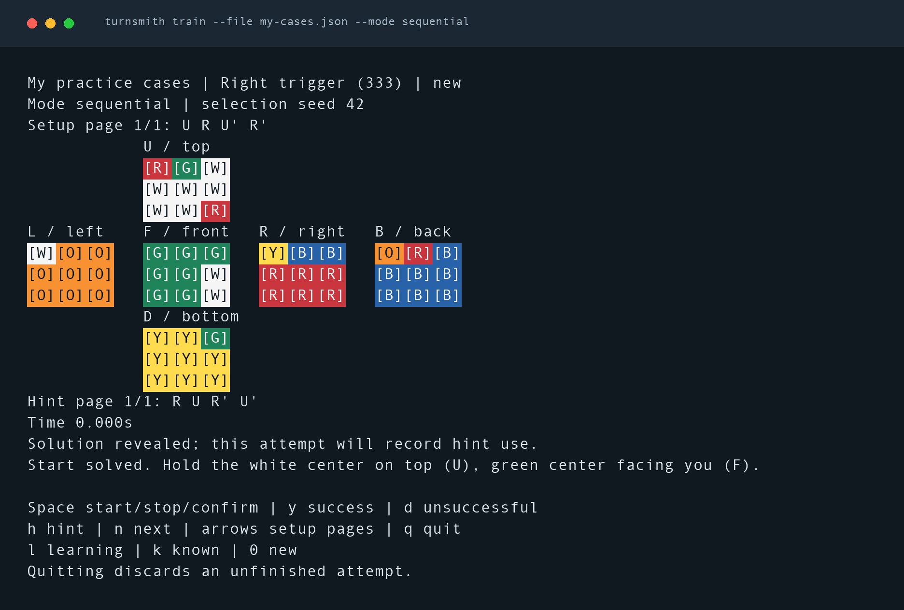

Offline Rubik's Cube practice in your terminal for 2×2, 3×3 and 4×4. One executable, no account, no internet after install.

The interactive guide, two moves into R U R' U'. Every sticker has a letter as well as a color.
Three tools in one binary.
Competition-style scrambles with WCA minimum-distance filters. Replay saved moves or inspect your own algorithms.
Step forward and back through a colored cube net. Undo shows the inverse move.
Time solves with inspection, track ao5 and ao12, export sessions to CSV, drill your own algorithm sets.

Timer with session stats

Algorithm practice
Hold a solved cube with white on top and green facing you.
# 1. a competition-style 3×3 scramble $ turnsmith # 2. follow an algorithm — Space/→ next, ← undo, q quit $ turnsmith guide --alg "R U R' U'" # 3. time a solve with 15s inspection $ turnsmith timer --session practice --inspection 15
| See the final cube state | turnsmith --seed 42 --diagram |
| Save five reproducible scrambles | turnsmith --count 5 --seed 42 --json > scrambles.json |
| Other puzzles | turnsmith --puzzle 222 · --puzzle 444 |
| Session results | turnsmith sessions show practice |
Prebuilt for macOS, Linux and Windows (ARM64 and AMD64). No Go needed.
Or with Go 1.27+:
$ go install github.com/frivas/turnsmith/cmd/turnsmith@v0.3.0 $ go install github.com/frivas/turnsmith/cmd/turnsmith-wca@v0.3.0
Turnsmith is practice software, not an official competition scramble program. Competitions must use the official TNoodle release.